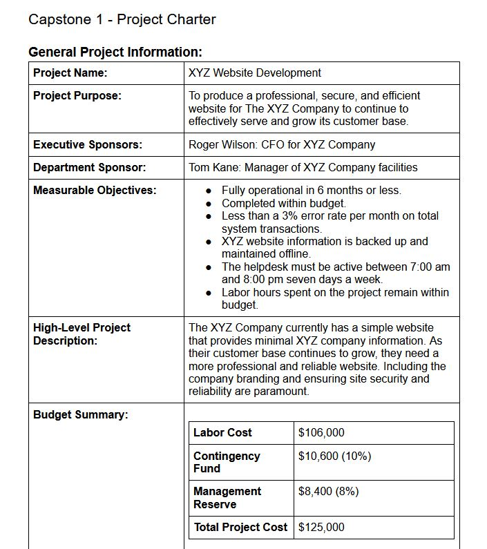

Project Life Cycle
Capstone 1
In the first capstone project of the Thinkful course, I created essential project management deliverables such as the project charter, requirements management plan, product backlog, and SDLC document. I was excited to apply the skills I was learning and my previous experiences to create professional and detailed work. I created a goal for myself to complete the project and have it approved by the grading team on the first attempt. I successfully passed the capstone without revisions and received an exemplary rating.
View Project Deliverables Here.
- Date: October 2020